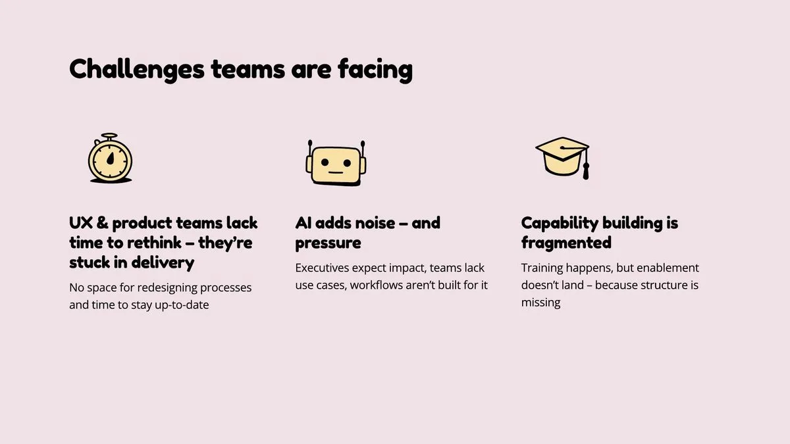
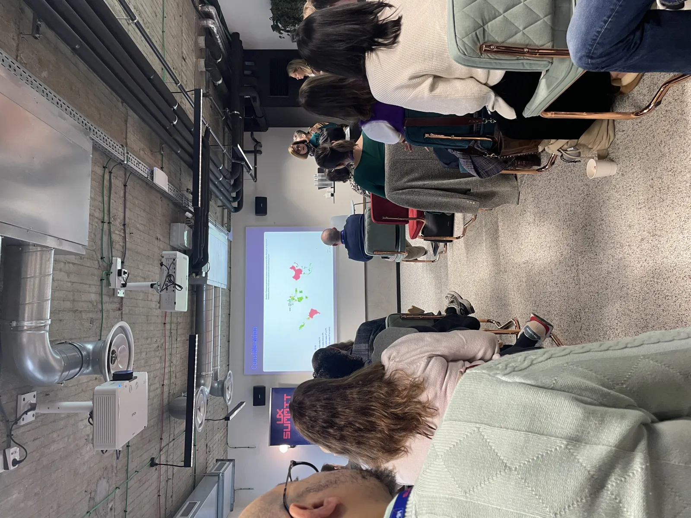
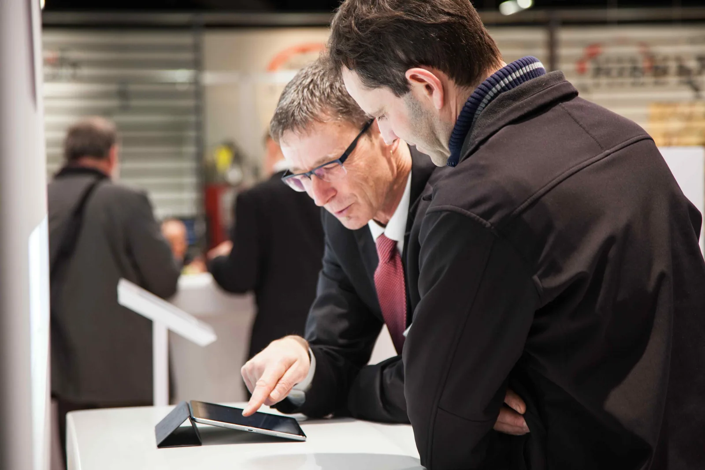
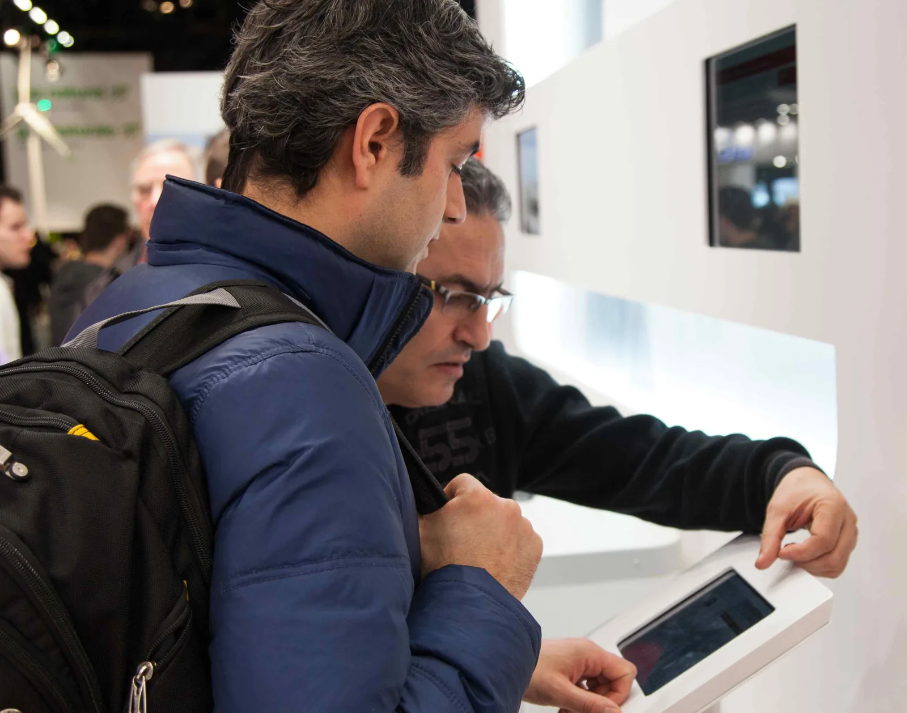
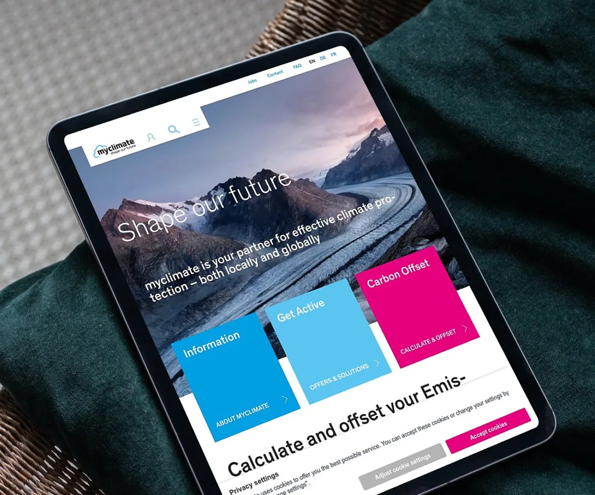

Ausgewählte Arbeit
Projekte
Transformationsprojekte aus unterschiedlichen Branchen und Kontexten — von der strategischen Konzeption bis zur operativen Umsetzung. Projektnamen werden auf Anfrage geteilt.



AI for Designers
@AXA Schweiz
Ein Workshop für das UX-Team der AXA Schweiz zu AI-Tools, GenAI-Workflows und der Frage, wie KI den Designprozess grundlegend verändert.
Gemeinsam mit WeSlam haben wir das UX-Team der AXA Schweiz auf eine strukturierte Reise durch die aktuelle AI-Landschaft mitgenommen — von Survey-Ergebnissen über Vibe Coding und MCP bis zu konkreten Anwendungsfällen im Designalltag.
Zentrale Erkenntnis: KI beschleunigt nicht nur den Prozess — sie verändert die Rahmenbedingungen, unter denen Designprozesse überhaupt sinnvoll sind. Wer AI als Enabler denkt und konsequent von Nutzerbedürfnissen her arbeitet, gewinnt an Wirksamkeit.



AXA – Agentic Experience
& Trust by Design
Als Teilnehmer und aktiver Mitgestalter des AXA UX Summit 2025 in Brüssel — Auseinandersetzung mit dem Paradigmenwechsel von klassischem UX Design hin zu agentischen KI-Systemen sowie Mitarbeit an der strategischen Frage, wie Vertrauen zur zentralen Designgrösse wird.
Als Head UX bei AXA nahm ich am zweitägigen internationalen Summit in Brüssel teil, der UX-Fachleute aus dem gesamten Konzern zusammenbrachte. Im Zentrum stand die Frage, wie agentische KI-Systeme — sogenannte Agentic Experiences (AX) — menschliches Verhalten grundlegend verändern und damit die Rolle von UX Designern neu definieren: weg vom Gestalten von Screens, hin zum Aufbau vertrauenswürdiger Mensch-Maschine-Beziehungen. Die zentralen Leitprinzipien dieser neuen Designdisziplin — Transparenz, Konsistenz und Empathie — bildeten die Grundlage für den fachlichen Austausch und die gemeinsame Entwicklung einer zukunftsorientierten UX-Vision innerhalb von AXA.
Swisscom –
Redesign B2B Website
Als massgeblicher UX-Treiber im B2B-Bereich der Swisscom — Konzeption und Umsetzung eines umfassenden Redesigns, Einführung agiler SAFe-Methoden sowie aktive Mitgestaltung der Zusammenführung zweier Projektteams.
Als Stream Lead UX Designer im B2B bei Swisscom war ich über dreieinhalb Jahre fachlich verantwortlich für die nutzerzentrierte Konzeption und Umsetzung zentraler digitaler Produkte und Services. Als Teil des Kernteams — gemeinsam mit Product Owner und Projektmanager — trug ich massgeblich dazu bei, zwei bisher getrennt arbeitende Projektteams erfolgreich zusammenzuführen und Designprozesse zu vereinheitlichen. Parallel dazu begleitete ich die Einführung agiler Arbeitsmethoden nach SAFe und half, eine gemeinsame UX-Vision im Team zu verankern.

Post CH AG –
Usability & Expert Review
Expert Review der Pick@home App sowie Konzept und Usability Testing des digitalen Versandassistenten.
Analyse der bestehenden App nach ISO-Heuristiken (Norman/Nielsen), Ableitung konkreter Handlungsempfehlungen und Beratung von Stakeholdern und Projektleitung. In einem zweiten Projekt: Visualisierung von Design-Thinking-Ergebnissen als Axure-Prototyp, Durchführung von Usability Tests als Moderator sowie Storyboardentwicklung und Wordcafé-Workshops.





STIEBEL ELTRON AG –
Digitale Beratungsplattform im Vertrieb
Für den internationalen Wärmepumpenhersteller Stiebel Eltron habe ich eine digitale Plattform konzipiert, die Vertriebsprozesse effizienter und kundenorientierter gestaltet.
Die App bereitet komplexe Produktinformationen interaktiv auf und ermöglicht Vertriebsmitarbeitenden, Kunden gezielt zu beraten. Technische Datenblätter können direkt elektronisch versendet werden. Die Lösung steigert die Effizienz im Verkaufsprozess, verbessert die Kundenerfahrung und schafft eine skalierbare digitale Schnittstelle zwischen Produktportfolio und Beratungspraxis.
St. Galler Kantonalbank –
Digitales Beratungstool
Visionsentwicklung und regelmässiges Usability Testing für ein interaktives Beratungstool — von der Einzelnutzung zur kooperativen Nutzung im Kundengespräch.
Aufbau speziell konstruierter Nutzertests im Berater-Kunden-Setting für die Anwendungsfälle Basisgespräch, Anlegen, Finanzieren und Vorsorgen. Erarbeitung der Produktvision als Prototyp sowie Aufbereitung und Präsentation der Ergebnisse auf Geschäftsleitungsebene.

Stiftung myclimate –
Usability Testing
Fachliche Gesamtverantwortung für das Usability-Testing der Website — von der Konzeption bis zur Massnahmenempfehlung.
Entwicklung des Testleitfadens in enger Zusammenarbeit mit dem Kunden, Rekrutierung und Koordination von Testnutzern, Testleitung und Auswertung. Präsentation eines konkreten Massnahmenpakets mit priorisierten Verbesserungsempfehlungen an die Projektverantwortlichen.
SVGW –
Digitale Neuausrichtung
Vollständiger Neuaufbau der digitalen Welt des Schweizerischen Verbands der Gas- und Wasserwirtschaft.
Von Visionsworkshop und Persona-Entwicklung über das Grobkonzept bis zum nutzer-getesteten Prototyp — Leitplanken für die Implementierung an Geschäftsleitung präsentiert.

DKSH –
Globaler Header & Newsportal
Nutzerzentrierte Beratung für die globale Website-Erneuerung — im Spannungsfeld fundamental unterschiedlicher Nutzerinteressen.
Expert Review nach Nielsen/Norman als Ausgangspunkt, gefolgt von der Priorisierung von Anforderungen aus Nutzer- und Businessperspektive. Entwicklung einer Gesamtvision mit globalem Impact, Weiterentwicklung von Contact & Locations sowie begleitendes Account Management.